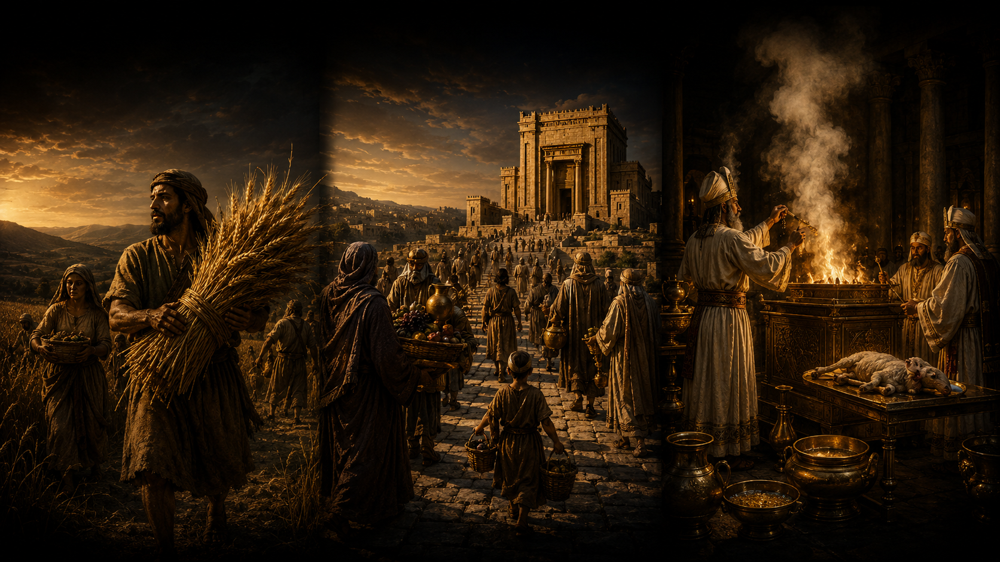

статья Что тексты Торы подразумевают под Шавуотом?!
⬧ Если тексты Торы касательно Шавуота поставить в хронологии их появления, то получится следующая картина:
◊ J-тексты говорят:
| Шмот 23:16–17 |
[Соблюдай] праздник жатвы первых плодов твоего труда, того, что ты посеял в поле,
и праздник сбора плодов на исходе года, когда уберёшь с поля плоды своих трудов.
(18) Три раза в год все ваши мужчины должны представать перед Владыкой, Яхве. |
וְחַג הַקָּצִיר בִּכּוּרֵי מַעֲשֶׂיךָ
אֲשֶׁר תִּזְרַע בַּשָּׂדֶה
וְחַג הָאָסִף בְּצֵאת הַשָּׁנָה
בְּאָסְפְּךָ אֶת־מַעֲשֶׂיךָ מִן־הַשָּׂדֶה׃
שָׁלֹשׁ פְּעָמִים בַּשָּׁנָה יֵרָאֶה כָּל־זְכוּרְךָ אֶל־פְּנֵי הָאָדֹן יְהוָה׃ |
שמות כ״ג:ט״ז–י״ז |
| Шмот 34:22 | Справляй праздник Шавуот — [праздник] первой жатвы пшеницы, а также праздник сбора плодов в конце года. | וְחַג שָׁבֻעֹת תַּעֲשֶׂה לְךָ בִּכּוּרֵי קְצִיר חִטִּים וְחַג הָאָסִיף תְּקוּפַת הַשָּׁנָה׃ | שמות ל״ד:כ״ב |
Здесь Шавуот (שָׁבֻעוֹת) это «праздник жатвы» — хаг ха-кацир (חַג הַקָּצִיר), то есть праздник первой пшеничной жатвы — биккурей кцир хиттим (בִּכּוּרֵי קְצִיר חִטִּים). Она наступает не в начале всего жатвенного сезона, а после/во время ячменной жатвы, начавшейся вскоре после Песаха. Поэтому Шавуот у J-автора - это переход к пшеничному урожаю, когда первые снопы пшеницы (плоды рук) приносятся Яхве, как признание того, что плодородие земли, рост зерна и сам хлеб зависят от божественного дара. [1] [2] [3] [4]
Важно, что в J-текстах ещё нет ни фиксированной даты Шавуота, ни формального отсчёта к нему. Праздник определяется не календарным числом, а самим ритмом поля: он наступает ровно тогда, когда созревает пшеница и появляется возможность принести Яхве первые плоды пшеничной жатвы.
О Шаувоте, как о периоде жатвы прямо говорит пророк Ирмиягу:
| Ирмиягу 5:24 | И не сказали в сердце своем: “убоимся Яхве, Бога нашего, который дает нам дождь ранний и поздний вовремя; недели (שְׁבֻעֹת), предназначенные для жатвы, хранит Он для нас”. | וְלֹא־אָמְרוּ בִלְבָבָם נִירָא־נָא אֶת־יְהוָה אֱלֹהֵינוּ הַנֹּתֵן גֶּשֶׁם יוֹרֶה וּמַלְקוֹשׁ בְּעִתּוֹ שְׁבֻעֹת חֻקּוֹת קָצִיר יִשְׁמָר־לָנוּ׃ | ירמיהו ה׳:כ״ד |
Также жатва - это время радости.
| Йешаягу 9:2 | Ты возвеличил народ, усилил радость его; радовались они пред Тобою, как радуются во время жатвы, как ликуют при разделе добычи. | הִרְבִּיתָ הַגּוֹי לוֹ הִגְדַּלְתָּ הַשִּׂמְחָה שָׂמְחוּ לְפָנֶיךָ כְּשִׂמְחַת בַּקָּצִיר כַּאֲשֶׁר יָגִילוּ בְּחַלְּקָם שָׁלָל׃ | ישעיהו ט׳:ב׳ |
◊ Шафан-писец (D-текст) сообщает:
| Дварим 16:9–12 | (9) Отсчитай себе семь недель. Начинай отсчитывать эти семь недель [с того дня], когда начинают [срезать] колосья серпом. | שִׁבְעָה שָׁבֻעֹת תִּסְפָּר־לָךְ מֵהָחֵל חֶרְמֵשׁ בַּקָּמָה תָּחֵל לִסְפֹּר שִׁבְעָה שָׁבֻעוֹת׃ | דברים ט״ז:ט׳–י״ב |
| (10) Справляй праздник Шавуот [во имя] Яхве, твоего Бога; приноси добровольный дар, по мере того, как благословит тебя Яхве, твой Бог. | וְעָשִׂיתָ חַג שָׁבֻעוֹת לַיהוָה אֱלֹהֶיךָ מִסַּת נִדְבַת יָדְךָ אֲשֶׁר תִּתֵּן כַּאֲשֶׁר יְבָרֶכְךָ יְהוָה אֱלֹהֶיךָ׃ | ||
| (11) Радуйся пред Яхве, твоим Богом, — ты сам, твой сын и твоя дочь, твой раб и твоя рабыня, и левит, который [живёт] в твоём городе, и переселенец, и сирота, и вдова, которые [живут] среди вас. [Веселитесь] на том месте, которое Яхве, твой Бог, изберёт как обитель для Своего Имени. | וְשָׂמַחְתָּ לִפְנֵי יְהוָה אֱלֹהֶיךָ אַתָּה וּבִנְךָ וּבִתֶּךָ וְעַבְדְּךָ וַאֲמָתֶךָ וְהַלֵּוִי אֲשֶׁר בִּשְׁעָרֶיךָ וְהַגֵּר וְהַיָּתוֹם וְהָאַלְמָנָה אֲשֶׁר בְּקִרְבֶּךָ בַּמָּקוֹם אֲשֶׁר יִבְחַר יְהוָה אֱלֹהֶיךָ לְשַׁכֵּן שְׁמוֹ שָׁם׃ | ||
| (12) Помни, что ты был рабом в Египте, и неукоснительно соблюдай эти законы. | וְזָכַרְתָּ כִּי־עֶבֶד הָיִיתָ בְּמִצְרָיִם וְשָׁמַרְתָּ וְעָשִׂיתָ אֶת־הַחֻקִּים הָאֵלֶּה׃ |
Здесь D-автор совершает кардинальное изменение: праздник определяется уже не через сам момент появления первой пшеницы, как в более ранней аграрной J-логике, а через семинедельный счёт от начала работы серпа. То есть Шавуот становится не праздником первых пшеничных плодов, а итоговой точкой всего зернового жатвенного периода. Так от первого серпа в поле — ячменной жатвы, отсчитываются семь недель, внутри которых происходит и первая пшеничная жатва (по J-источнику Шавуот). Только после всех сборов злаковых совершается праздничный дар Яхве т.е., Шавуот.
Как устроены эти семь недель? Речь идёт не о математически точном агрономическом графике, а о реальном зерновом коридоре весны. Сначала созревал ячмень — сеорим (שְׂעֹרִים): в зависимости от региона, высоты местности, влажности и конкретного года его начинали жать примерно в период Песаха, то есть весной. Пшеница — хиттим (חִטִּים) — созревала позднее: через несколько недель после ячменя, ближе к концу весеннего сезона. Сама жатва тоже не происходила в один день: поля созревали неравномерно, разные участки убирали постепенно, и весь зерновой цикл — от первого серпа по ячменю до зрелой пшеничной жатвы — мог занимать примерно семь недель. Поэтому D-формула «от начала серпа» до Шавуота отражает не абстрактную дату, а живую аграрную реальность.
Во-вторых, D-автор делает важное смещение: от ранней идеи жатвы первого пшеничного снопа, как конкретного полевого дара Яхве, к добровольному дару — нидват яд (נִדְבַת יָד), который каждый приносит «по мере благословения», полученного от Яхве.
В-третьих, ещё одно ключевое изменение состоит в том, что — это уже не ритуал приношения пшеничного снопа, а логика радости, памяти и централизации. Шавуот нужно совершать «на месте, которое изберёт Яхве», то есть в едином законном святилище; дар приносится «по мере благословения», а радость праздника должна охватить не только владельца урожая, но и сына, дочь, раба, рабыню, левита (לֵוִי), переселенца (גֵּר), сироту (יָתוֹם) и вдову (אַלְמָנָה). Поэтому у Шафана-писца (D-автора) Шавуот — это уже не просто аграрный праздник пшеницы, а социально-заветный праздник урожая, где благословение земли должно быть разделено со слабыми, потому что сам Израиль помнит, что был рабом в Египте. [5] [6] [7] [8]
◊ Жреческие (Р-тексты):
| Ваикра 23:15–21 | (15) Отсчитайте от второго дня праздника — от дня, когда вы принесёте сноп возношения, — семь недель. [Недели] должны быть полными: | וּסְפַרְתֶּם לָכֶם מִמָּחֳרַת הַשַּׁבָּת מִיּוֹם הֲבִיאֲכֶם אֶת־עֹמֶר הַתְּנוּפָה שֶׁבַע שַׁבָּתוֹת תְּמִימֹת תִּהְיֶינָה׃ | ויקרא כ״ג:ט״ו–כ״א |
| (16) Отсчитайте пятьдесят дней — до дня, следующего за седьмой неделей, — и совершите новое хлебное приношение Яхве. | עַד מִמָּחֳרַת הַשַּׁבָּת הַשְּׁבִיעִת תִּסְפְּרוּ חֲמִשִּׁים יוֹם וְהִקְרַבְתֶּם מִנְחָה חֲדָשָׁה לַיהוָה׃ | ||
| (17) Принесите из своих селений два хлеба возношения. [В каждом хлебе] должно быть две десятых [эйфы] муки тонкого помола; их нужно испечь из квасного [теста]. Это — первые плоды Яхве. | מִמּוֹשְׁבֹתֵיכֶם תָּבִיאּוּ לֶחֶם תְּנוּפָה שְׁתַּיִם שְׁנֵי עֶשְׂרֹנִים סֹלֶת תִּהְיֶינָה חָמֵץ תֵּאָפֶינָה בִּכּוּרִים לַיהוָה׃ | ||
| (18) Вместе с хлебом принесите в жертву семь годовалых ягнят без порока, одного молодого быка и двух баранов. Это будет всесожжение Яхве, с хлебным приношением и возлиянием, — огненная жертва Яхве, благоухание, приятное Ему. | וְהִקְרַבְתֶּם עַל־הַלֶּחֶם שִׁבְעַת כְּבָשִׂים תְּמִימִם בְּנֵי שָׁנָה וּפַר בֶּן־בָּקָר אֶחָד וְאֵילִם שְׁנָיִם יִהְיוּ עֹלָה לַיהוָה וּמִנְחָתָם וְנִסְכֵּיהֶם אִשֵּׁה רֵיחַ־נִיחֹחַ לַיהוָה׃ | ||
| (19) Приготовьте одного козлёнка как жертву за грех, а двух годовалых барашков — как мирную жертву. | וַעֲשִׂיתֶם שְׂעִיר־עִזִּים אֶחָד לְחַטָּאת וּשְׁנֵי כְבָשִׂים בְּנֵי שָׁנָה לְזֶבַח שְׁלָמִים׃ | ||
| (20) Пусть священник вознесёт их — этих двух барашков — вместе с хлебом первого урожая как дар Яхве. Это будет святыня Яхве, для священника. | וְהֵנִיף הַכֹּהֵן אֹתָם עַל לֶחֶם הַבִּכּוּרִים תְּנוּפָה לִפְנֵי יְהוָה עַל־שְׁנֵי כְבָשִׂים קֹדֶשׁ יִהְיוּ לַיהוָה לַכֹּהֵן׃ | ||
| (21) В этот самый день провозгласите: “У вас — священное собрание!” И никакой работы не делайте. Это — вечное установление для вас, где бы вы ни жили, из поколения в поколение. | וּקְרָאתֶם בְּעֶצֶם הַיּוֹם הַזֶּה מִקְרָא־קֹדֶשׁ יִהְיֶה לָכֶם כָּל־מְלֶאכֶת עֲבֹדָה לֹא תַעֲשׂוּ חֻקַּת עוֹלָם בְּכָל־מוֹשְׁבֹתֵיכֶם לְדֹרֹתֵיכֶם׃ | ||
| Бемидбар 28:26–31 | (26) А в день первых плодов, когда вы совершаете новое хлебное приношение Яхве, — в [праздник] Шавуот — у вас будет священное собрание, не делайте никакой работы. | וּבְיוֹם הַבִּכּוּרִים בְּהַקְרִיבְכֶם מִנְחָה חֲדָשָׁה לַיהוָה בְּשָׁבֻעֹתֵיכֶם מִקְרָא־קֹדֶשׁ יִהְיֶה לָכֶם כָּל־מְלֶאכֶת עֲבֹדָה לֹא תַעֲשׂוּ׃ | במדבר כ״ח:כ״ו–ל״א |
| (27) Принесите жертву всесожжения — двух молодых быков, одного барана и семь годовалых ягнят. | וְהִקְרַבְתֶּם עוֹלָה לְרֵיחַ נִיחֹחַ לַיהוָה פָּרִים בְּנֵי־בָקָר שְׁנַיִם אַיִל אֶחָד שִׁבְעָה כְבָשִׂים בְּנֵי שָׁנָה׃ | ||
| (28) — как благоухание, приятное Яхве. При этом [совершите] хлебное приношение: три десятых [эйфы пшеничной] муки тонкого помола, смешанной с оливковым маслом, — на одного быка, две десятых [эйфы] — на одного барана. | וּמִנְחָתָם סֹלֶת בְּלוּלָה בַשָּׁמֶן שְׁלֹשָׁה עֶשְׂרֹנִים לַפָּר הָאֶחָד שְׁנֵי עֶשְׂרֹנִים לָאַיִל הָאֶחָד׃ | ||
| (29) По одной десятой [эйфы] — на каждого из семи ягнят. | עִשָּׂרוֹן עִשָּׂרוֹן לַכֶּבֶשׂ הָאֶחָד לְשִׁבְעַת הַכְּבָשִׂים׃ | ||
| (30) [И принесите в жертву] одного козла, чтобы искупить себя. | שְׂעִיר עִזִּים אֶחָד לְכַפֵּר עֲלֵיכֶם׃ | ||
| (31) Совершайте это помимо постоянного всесожжения и хлебного приношения к нему. [Все эти жертвенные животные] должны быть у вас без изъяна, и при этом [совершайте] возлияние. | מִלְּבַד עֹלַת הַתָּמִיד וּמִנְחָתוֹ תַּעֲשׂוּ תְּמִימִם יִהְיוּ־לָכֶם וְנִסְכֵּיהֶם׃ |
В поздних жреческих текстах перспектива праздника меняется: Шавуот уходит от простого аграрного J-языка поля и от D-логики общенародной радости в язык храма, ритуального счёта и жертвенного порядка. P-автор принимает Шавуот, как конец сбора злаковых и ритуализирует саму формулу счёта семи недель: теперь счёт начинается не просто от первого серпа в поле, а от принесения ячменного возношения — омера (עֹמֶר). Иными словами, начало жатвенного времени получает храмовую точку отсчёта. [9] [10]
Во-вторых, на Шавуот приносится уже не непосредственная первина пшеничной жатвы, как в ранней аграрной J-логике, и не D-добровольный дар, а «новое хлебное приношение» — минха хадаша (מִנְחָה חֲדָשָׁה). В центре праздника теперь стоит не просто полевая реальность жатвы и не только радость общины, а оформленный храмовый акт: два хлеба возношения, приготовленных из нового урожая. [11]
В-третьих, эти хлебные приношения встраиваются в систему «первых плодов» — ха-биккурим (הַבִּכּוּרִים), где для них разработан целый комплекс жертв: всесожжения, хлебные приношения, жертва за грех и возлияния. Урожай должен пройти через священника, жертвенник и установленный ритуал, чтобы стать «святыней Яхве». [12]
В-четвёртых, сам день Шавуота получает новый жреческий статус «священного собрания» — микра кодеш (מִקְרָא־קֹדֶשׁ), дня, в который запрещена обычная работа. Поэтому в поздней жреческой редакции Шавуот становится уже не просто праздником пшеницы, а сакрализованной точкой храмового календаря: поле превращается в литургию, урожай — в приношение, а первый хлеб — в святыню Яхве. [13] [14] [15] [16]
◊ Книга Рут (רות) написанная в ≈ -5/-4 веке [17] и говорит о событиях сбора ячменя и пшеницы т.е., периода в который происходит - Шавуот:
| Рут 1:22 | И вернулась Наоми, и Рут-моавитянка, её невестка, с нею, вернувшаяся с полей Моава; и они пришли в Бейт-Лехем в начале жатвы ячменя. | וַתָּשָׁב נָעֳמִי וְרוּת הַמּוֹאֲבִיָּה כַלָּתָהּ עִמָּהּ הַשָּׁבָה מִשְּׂדֵי מוֹאָב וְהֵמָּה בָּאוּ בֵּית לֶחֶם בִּתְחִלַּת קְצִיר שְׂעֹרִים׃ | רות א׳:כ״ב |
| Рут 2:21 | И сказала Рут-моавитянка: “Он также сказал мне: держись моих работников, пока они не закончат всю мою жатву”. | וַתֹּאמֶר רוּת הַמּוֹאֲבִיָּה גַּם כִּי־אָמַר אֵלַי עִם־הַנְּעָרִים אֲשֶׁר־לִי תִּדְבָּקִין עַד אִם־כִּלּוּ אֵת כׇּל־הַקָּצִיר אֲשֶׁר־לִי׃ | רות ב׳:כ״א |
| Рут 2:23 | И держалась она девушек Боаза, чтобы собирать, до окончания жатвы ячменя и жатвы пшеницы; и жила со своей свекровью. | וַתִּדְבַּק בְּנַעֲרוֹת בֹּעַז לְלַקֵּט עַד־כְּלוֹת קְצִיר־הַשְּׂעֹרִים וּקְצִיר הַחִטִּים וַתֵּשֶׁב אֶת־חֲמוֹתָהּ׃ | רות ב׳:כ״ג |
Автор книги Рут прекрасно знает сам сезон перехода от ячменя к пшенице — и это тот земледельческий коридор, внутри которого в Торе появляется Шавуот. Но показательно, что автор никак не называет этот праздник, не описывает храмовое приношение, не говорит о счёте семи недель, не упоминает омер (עֹמֶר), два хлеба, микра кодеш (מִקְרָא־קֹדֶשׁ) или день первых плодов — йом ха-биккурим (יוֹם הַבִּכּוּרִים). Жреческие предписания в книге Рут остаётся не событием, а фоном.
С другой стороны, автор Рут прекрасно демонстрирует норму, известную из Дварим 24:19: «Когда будешь жать жатву твою на поле твоём и забудешь сноп на поле, не возвращайся взять его; пусть он будет для переселенца, сироты и вдовы, чтобы благословил тебя Яхве, твой Бог, во всяком деле рук твоих». Та же социальная логика выражена и в законах о том, что поле нельзя дожинать до конца и нельзя подбирать остатки жатвы, потому что они должны оставаться бедному и пришельцу (Ваикра 19:9–10; Ваикра 23:22). Именно эту норму автор Рут ярко превращает в сюжет: «И поднялась она, чтобы собирать; и повелел Боаз своим слугам, говоря: “Пусть она собирает даже между снопами, и не стыдите её. И даже вытаскивайте для неё из связок, и оставляйте, чтобы она собирала, и не укоряйте её”» (Рут 2:15–16). [18] [19]
Отсюда видно, во-первых, насколько такое поведение воспринималось как нормативное для Израиля: право бедного, вдовы и пришельца на остатки урожая не является поздней абстракцией, а выглядит как укоренённая полевая практика. Во-вторых, особенно показательно, что автор Рут проходит через весь сезон сбора злаковых, но не обозначает детали подготовки к Шавуоту, тогда как менее «грандиозную» норму о забытом снопе и оставленных колосьях делает важной частью рассказа. Это молчание может быть не случайным: возможно, сам народный Шавуот ещё сохранял старые порядки, а жреческие нормы Шавуота из кн. Ваикра были скорее книжно-храмовой конструкцией, тогда как социальная норма поля уже воспринималась как живая и древняя традиция Израиля. [20]
Здесь лишь кратко упомянем важное явление: «разрыв» между нормативно-правовыми текстами и сюжетными рассказами Танаха. Правовые тексты обычно говорят о том, как должно быть устроено по норме — в рамках идеологии автора, храмовой системы или книжной традиции. Сюжетные же рассказы нередко показывают живую практику, народную память и иные, более древние или параллельные традиции. Поэтому рассказ может не упоминать важный закон, обходить его, смягчать, иметь не состыковки или даже сохранять более раннюю форму обычая.
𐎀 Какая картина в итоге? 𐎀
Если расположить тексты Торы непосредственно говорящие о Шавуоте (שָׁבֻעוֹת) в предполагаемой хронологии их появления, становится видно, что перед нами не один неизменный праздник, а постепенная трансформация его смысла и обрядового наполнения. В J-текстах Шавуот — это прежде всего аграрный праздник поля: праздник жатвы, первых снопов пшеницы и явление с ними перед Яхве. В D-тексте праздник переносится на конец жатвенного сезона. А счёт семи недель нужен для того, чтобы все закончили сбор злаковых и явились с дарами на местом, которое изберёт Яхве». Главное здесь социально-заветная радость: урожай должен стать благословением не только для владельца поля, но и для левита, переселенца, сироты и вдовы. В P-текстах Шавуот окончательно встраивается в храмовую систему: появляются приношение омера (עֹמֶר), «новое хлебное приношение» (מִנְחָה חֲדָשָׁה), жертвы и статус «священного собрания» (מִקְרָא־קֹדֶשׁ).
Однако книга Рут (רוּת) показывает, что в живой иудейской практике -5 века Шавуот, вероятно, мог восприниматься и совершаться гораздо архаичнее, чем это предписывают жреческие тексты. Иными словами, «на земле» книжно-жреческий Шавуот, описанный в Ваикра и Бемидбар, ещё не обязательно отражал повседневную народную реальность. Для многих он мог оставаться прежде всего временем жатвы, поля, пшеницы, первых плодов и социальной заботы о бедном и пришельце.
Заметим, что все нормативные тексты Торы, регламентирующие Шавуот, связывают его не с днём дарования Торы на горе Синай, а с первой пшеничной жатвой, счётом недель, принесением первых плодов и храмовыми жертвами. То есть в самой Торе Шавуот — это прежде всего аграрно-культовый праздник урожая, а не праздник Синайского откровения. [21] [22]
Ещё одна интересная деталь состоит в том, что Шавуот нигде не упоминается в Танахе за пределами Торы. Исключение составляет лишь один отрывок:
| Диврей га-ямим II 8:13 | И по ежедневному порядку — чтобы приносить по заповеди Моше: в субботы, в новомесячия и в праздники, три раза в год: в праздник Мацот, в праздник Шавуот и в праздник Суккот. | וּבִדְבַר־יוֹם בְּיוֹמוֹ לְהַעֲלוֹת כְּמִצְוַת מֹשֶׁה לַשַּׁבָּתוֹת וְלֶחֳדָשִׁים וְלַמּוֹעֲדוֹת שָׁלֹשׁ פְּעָמִים בַּשָּׁנָה בְּחַג הַמַּצּוֹת וּבְחַג הַשָּׁבֻעוֹת וּבְחַג הַסֻּכּוֹת׃ | דברי הימים ב׳ ח׳:י״ג |
⤷ Сноски